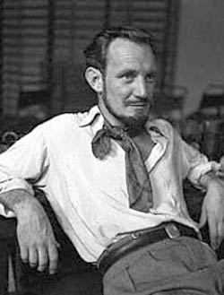

Tuesday, March the 4th, 2008
back to: title, date or indexes
From yesterday's Grauniad:
Trevor Howard, the star of the 1945 movie Brief Encounter, earned the respect of his peers recounting his brave military past, parachuting into Nazi-occupied Norway and taking part in the Allied invasion of Sicily. After his death, Public Record Office files revealed that he had been invalided out of the army and judged to be mentally unstable with a “psychopathic personality”.
